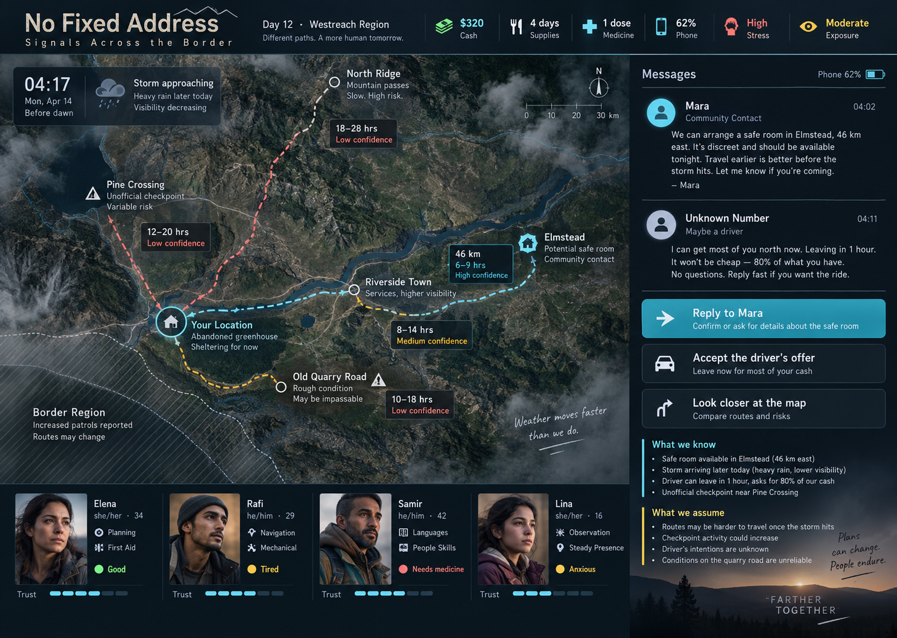
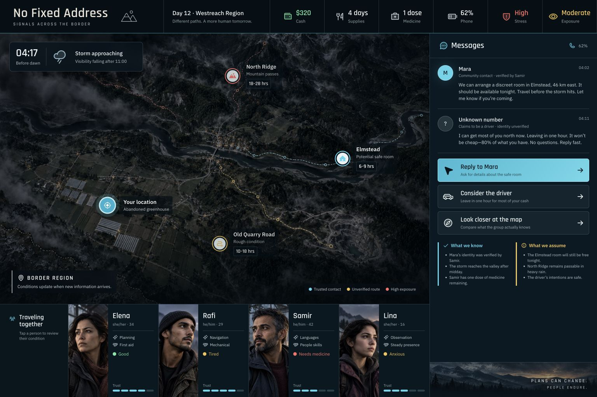

No Fixed Address — visual comparison
Source visual · 1536 × 1024
Implementation · 1536 × 1024
Focused comparison · decision panel and dense information hierarchy
Source panel
Implementation panel
Same initial state. Desktop viewport 1536 × 1024 at device pixel ratio 1.